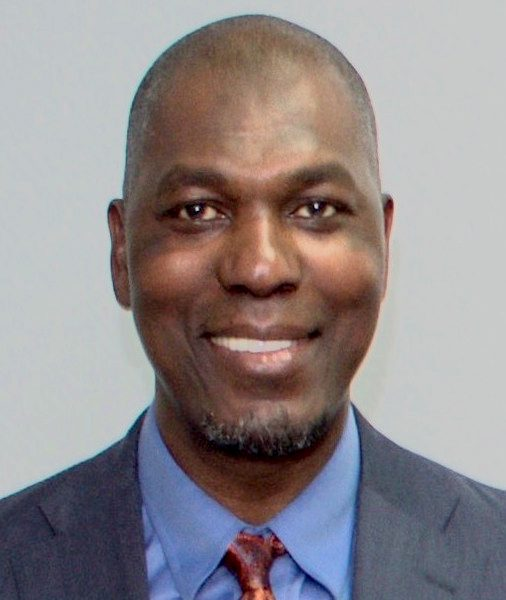

The Great Wall with a Heart: The Life and Burden of Yao Ming
From the streets of Shanghai to the rafters of Houston, Yao Ming was more than a basketball player—he was a bridge for an entire continent.

In 2002, when Yao Ming arrived in the NBA, fans across Asia saw one of their own step into a league that had seemed closed to them. He stood seven feet six inches tall, but his height was only part of the story. Just as striking was the way he carried himself: calm, modest and quietly determined.
Yao Ming didn't just play in the NBA; he carried the expectations of 1.4 billion people on his shoulders every time he laced up his sneakers. That kind of weight can crush a man, but Yao used it to build a bridge.
The Boy Who Grew Too Fast

Yao was born in Shanghai in 1980, the only child of two basketball players. His father, Yao Zhiyuan, stood 6'7", and his mother, Fang Fengdi, was 6'2". In a country just beginning to open its doors to the world, Yao’s growth was a matter of national interest. By the age of 12, he was already taller than most grown men. He didn't initially love the game; he was a bookish boy who enjoyed history. But his height was a gift he couldn't ignore, and by 13, he was training ten hours a day with the Shanghai Sharks youth team.
When he arrived in the United States as the number one overall pick in the 2002 NBA Draft, the skepticism was deafening. Pundits doubted his strength, his speed, and his stamina. Charles Barkley famously bet that he would kiss his co-analyst's rear end if Yao ever scored 19 points in a single game.
Yao didn't respond with trash talk. He responded with a performance against the Los Angeles Lakers where he went 9-for-9 from the field. Barkley ended up kissing the backside of a donkey brought into the studio. It was the moment the world realized Yao wasn't just a tall man—he was a skilled technician with a soft touch and a high basketball IQ.
A Bridge Made of Glass and Steel

What many fans in the West didn't see was the grueling schedule Yao maintained. While other NBA stars spent their summers resting or filming movies, Yao was on a plane back to China. He felt a profound duty to the Chinese National Team. He played in the Olympics, the FIBA World Championships, and the Asian Games. He never said no to his country.
That commitment came at a physical cost. For a man of his size, the body is fragile. The constant pounding on the hardwood, the lack of an off-season, and the sheer number of miles flown eventually caught up to him. His career was a cycle of dominance followed by devastating foot and ankle injuries.
Between 2005 and 2011, he missed hundreds of games. Yet, when he was on the floor, he was unstoppable. He made the All-Star team eight times. He turned the Houston Rockets into Asia's team. Across Asia, even people who did not follow basketball knew his name. He helped make the NBA global in a way no marketing campaign could.
The Giant's Second Act
When Yao retired in 2011 at the age of 30, many felt it came too soon. But Yao’s impact didn't end with his final jump shot. He returned to China and eventually became the President of the Chinese Basketball Association (CBA) in 2017, a role he held until his resignation in October 2024. He tried to professionalize the league, focusing on youth development and cleaning up the sport's image.
Beyond the court, he became a voice for those who couldn't speak. He famously campaigned against the shark fin soup trade, leading to a massive decline in consumption in China. He showed that an athlete’s platform can be used for more than just selling shoes; it can be used to change cultural habits for the better.
Today Yao is a Hall of Famer and a philanthropist, and he still carries the same humble dignity. For young Asian athletes, the doors he opened remain open. His career showed that an athlete does not have to change who they are to succeed on the world stage.
Sport is often about the score at the final buzzer. But with Yao, the story was always about the reach of his arms—not just to block a shot, but to pull two halves of the world a little bit closer together.
He remains the tallest reminder that greatness is measured by what you leave behind, not just what you take from the game.